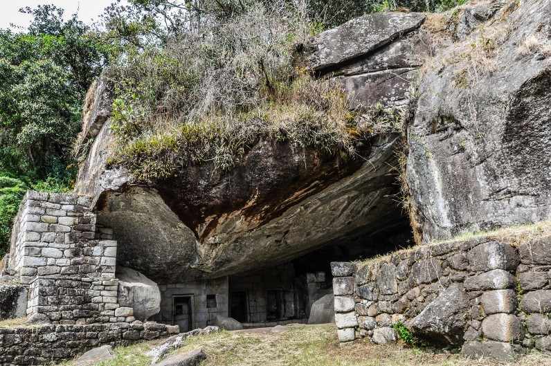

Machu Picchu
Um dos lugares turísticos mais importantes da Cidadela de Machu Picchu
-
Templo do Sol
O Templo do Sol foi construído para adorar o deus inca do sol e possui uma localização estratégica que permite receber os primeiros raios de sol do dia no solstício de inverno. As paredes deste templo são construídas com grandes blocos de pedra perfeitamente talhados, que se encaixam sem a necessidade de utilizar qualquer tipo de argamassa. Além disso, no interior do templo, podem ser encontradas algumas representações da cultura inca, como desenhos e pinturas. Sem dúvida, o Templo do Sol é um dos lugares mais impressionantes da Cidadela de Machu Picchu.
Rio de Janeiro
Um dos lugares turísticos mais importantes do Rio de Janeiro
-
Cristo Redentor: Uma das 7 Maravilhas do Mundo
No topo do morro do Corcovado, a mais de 700 m acima do nível do mar. É ali que fica um dos símbolos mais importantes não só do Rio de Janeiro, mas também de todo o Brasil: o Cristo Redentor. É quase impossível desassociar a imagem desse ícone, inaugurado em 1931, da Cidade Maravilhosa. Em estilo art déco, a estátua foi quase toda construída no Brasil, exceto as partes da cabeça e das mãos, que foram feitas na França. O Cristo está situado no Parque Nacional da Tijuca, mede 38 m de altura e pesa mais de mil toneladas. Além de encantar com toda sua majestosidade, um passeio que leva até o alto da imagem garante vistas maravilhosas da capital inteira. Para isso, é bacana privilegiar dias em que o tempo esteja firme, sem muitas nuvens, para que as vistas lá de cima sejam bem nítidas e rendam ótimas fotos.

Buenos Aires
O Obelisco é, no mundo inteiro, o maior emblema da cidade.
-
Avenida 9 de Julio e Obelisco
O Obelisco de Buenos Aires é um dos principais cartões postais da cidade, foi instalado no emblemático cruzamento da Av. Corrientes com a 9 de Julio quando a capital completou 400 anos. Impossível passar por ali e não prestar atenção nos seus 67 metros de altura, um marco do centro de Buenos Aires, sempre cercado de movimento dia e noite. Além disso, a 9 de Julio é famosa por ser a avenida mais larga do mundo e uma das vias mais importantes da capital, nela e em seu entorno há dezenas de hotéis, restaurantes, casas de Tango, teatros, etc, grande parte na Av. Corrientes, conhecida como a "Broadway" argentina.